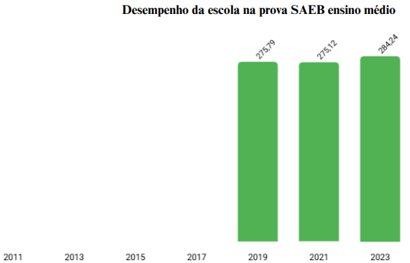
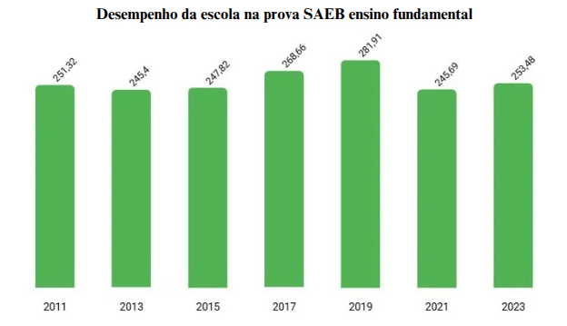

SAEB
Prova SAEB avalia qualidade da educação básica e influencia investimentos nas escolas
A Prova SAEB (Sistema de Avaliação da Educação Básica) é aplicada nos últimos anos de cada etapa da educação básica (5º, 9º, 3º) com o objetivo de medir o nível de ensino nas escolas brasileiras. Aplicada a cada dois anos, a avaliação é uma importante ferramenta para garantir um diagnóstico mais abrangente e aprofundado da qualidade da educação pública no país.
As disciplinas avaliadas são Língua Portuguesa e Matemática, consideradas fundamentais para o desenvolvimento educacional dos estudantes. Os resultados obtidos são utilizados por escolas e órgãos educacionais para analisar o desempenho das instituições e identificar áreas que precisam de melhorias.
 Além de medir a aprendizagem dos alunos, a Prova SAEB também influencia diretamente o repasse de verbas para investimentos pedagógicos. Escolas que apresentam bom desempenho podem receber mais recursos para aprimorar seu trabalho educativo. No entanto, fatores como reprovação e abandono escolar ainda representam desafios para alcançar melhores resultados, em nosso Colégio. A participação dos alunos na Prova SAEB é obrigatória.